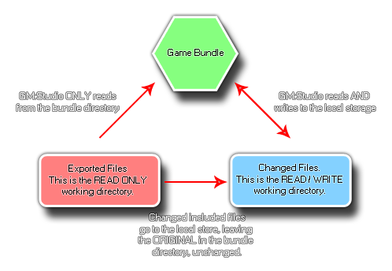

When using the file system functions included with GameMaker:
Studio it is vitally important to know exactly how everything
works and what things are going on behind the scenes. To that end,
this section is designed to explain and clarify exactly how things
are stored, where they are stored and what possible limits or
workarounds there may be to this system.
The first (and most important) thing to note about the file
functions is that they are limited (in general) to the
sandbox. What this means is that GameMaker: Studio
cannot save or load files from anywhere that is not part of the
game bundle or the local storage for the device without
explicit input from the user, and even then this input is
limited to only Windows and Mac target platforms.
To understand the sandbox first of all you need to understand that
there are two distinct areas for files:
- The File Bundle - this is where all the files that are packaged with the executable game are stored, including the files that you have added to the Included Files resource list from the GameMaker: Studio IDE (which are the external files that you want packaged with the game).
- The Save Area - this is an area of device storage that can be safely written to by the game and the game is guaranteed that this is a writable area.
The following diagram may help you to visualise this better: 
NOTE: You can never write to the File Bundle
directory.
The two target areas (Bundle directory and the local storage
area) are available on each target platform, but on each one they
work slightly differently. However GameMaker: Studio has
abstracted out the main essence of what can and can't be done,
making it easier to re-target games to multiple environments.
To start with, you should understand what is meant when we talk of
the working_directory. This is a
synonym for the two possible save locations (as illustrated by the
diagram above) and when you use that directory it will do one of
two things depending on whether you are reading or writing, and
whether the file you are reading from has been changed or not:
- Reading Operations - working_directory will first check the save area to see if the file being accessed is there, and if it is uses that. However if the file does not exists in the save area, it then checks the file bundle area and uses that (if the file being looked for is an included file with your game).
- Writing Operations - This can only happen in the save area.
Using these two simple rules we can now see how the following functions work (these are examples to help you to visualise the process for the different functions available):
- directory_create (and the other directory functions) will only work in the save area.
- the file system functions will return information on files from both the bundle and the save area, but will only write to the save area.
- the functions for writing text, binary or ini files will create a new file in the save area if one does not already exist, copying over any information from the original files included with the game bundle should they exist.
On the Windows platform there is one way to save and load files
from outside of the sandbox and that is using the functions
get_open_filename
and get_save_filename.
Both of these functions will require that the user select an area
for loading and saving and the return string can then be used in
the rest of the file functions to bypass the sandbox.
When working with GameMaker: Studio, you should know that each target platform has its own save area where files and directories can be written to and read from. Below is a list of those areas for each target:
- Windows - Windows has all files in the %localappdata%\<Game Name> directory (on Windows 7 this is the /Users/<User Name>/AppData/Local/<Game Name> directory).
- Mac OS - Storage will depend on whether the application is sandboxed or not (following Apples rules, with the path usually being ~/Library/Application Support/<Game Name>).
- Ubuntu (Linux) - Files are stored in the Home/.config/gamename where "Home" is the users home directory - /home/<username>
- HTML5 - Everything is done through the local storage.
- iOS - Storage is the standard location (as viewed through iTunes).
- Android - Files are in the standard location (which is invisible unless the device is rooted) /data/data/<package name>.
While on some platforms you can use the file name on its own to
access included files, it is worth noting that on devices (Android,
iOS) you must use the prefix of the
working_directory to access stored files as using just the
relative path will not work. It is also worth noting that the HTML5
target module has a limit on local storage (which can be between
1MB and 5MB depending on the browser) meaning that you will not be
permitted to save large sprites, screenshots etc....